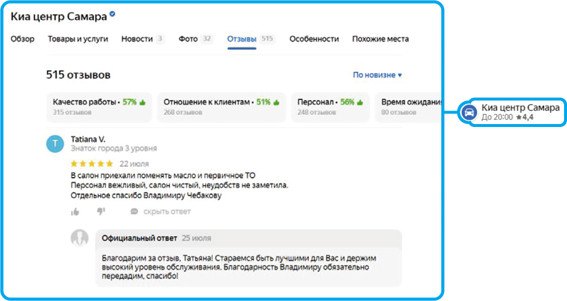
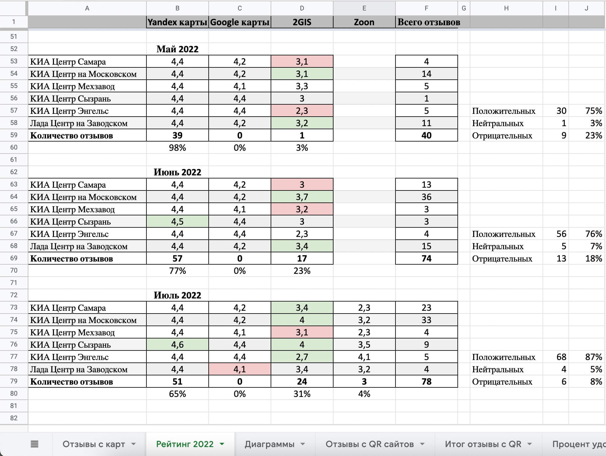
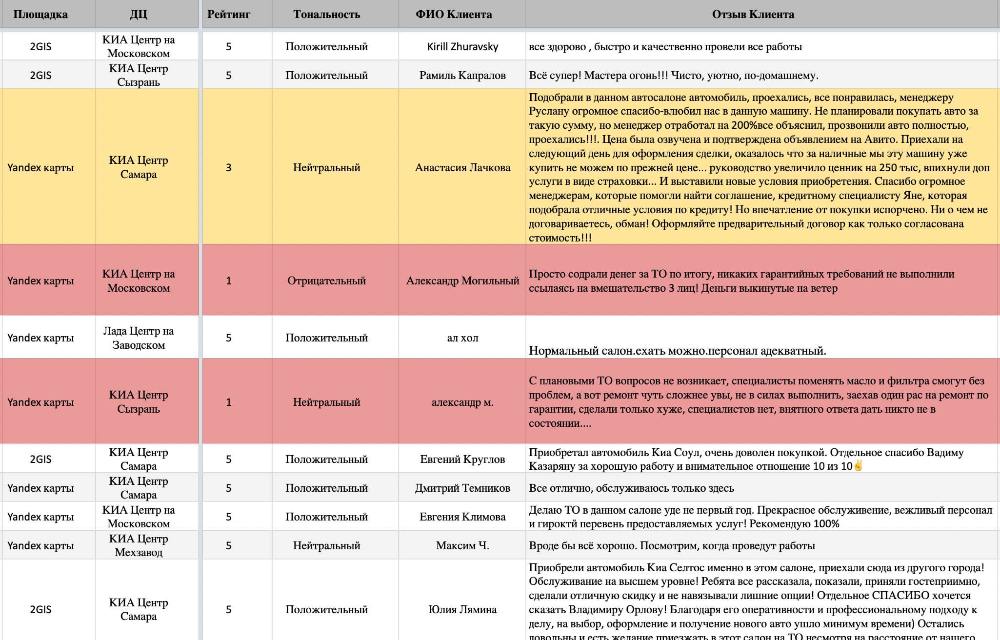
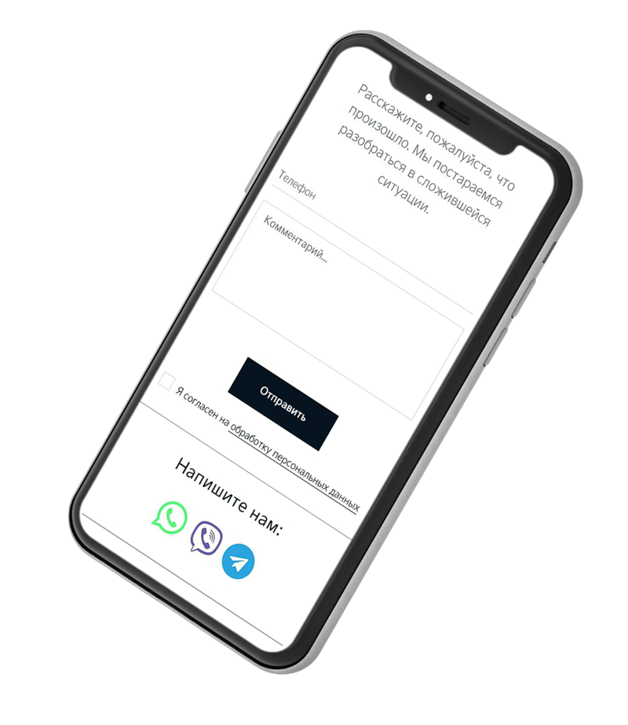
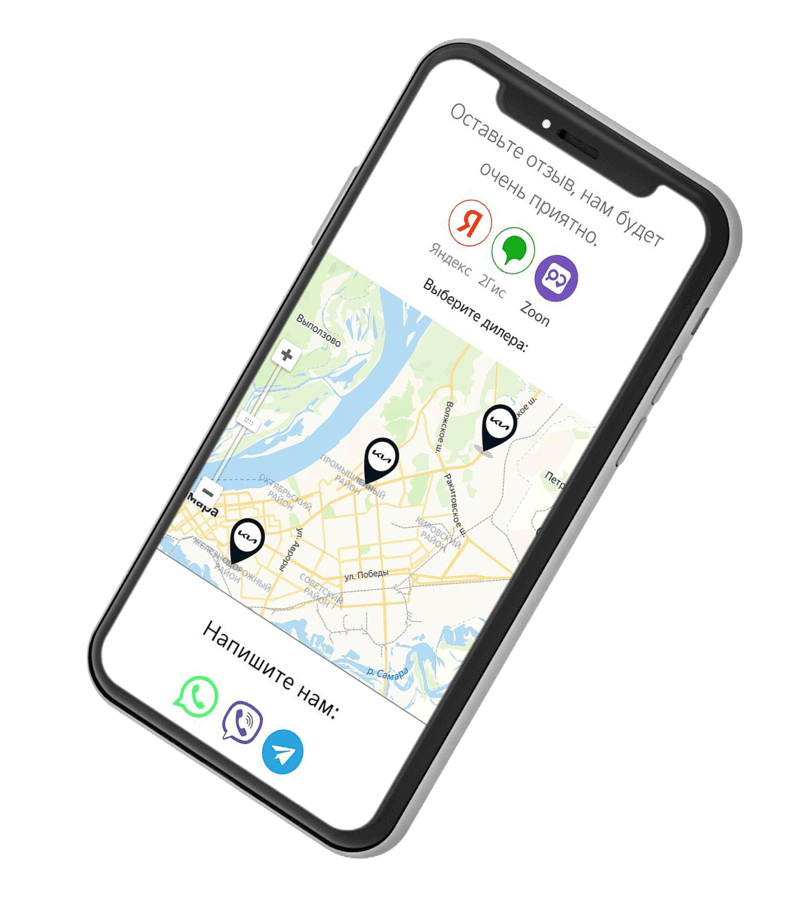

Система управления репутацией
в интернете
Коммерческое предложение

Система купирования
негативных отзывов
Задачи, которые система помогает решить:
1. Внедрение системы контроля и мотивации сотрудников первой линии позволит улучшить качество их работы, увеличит количество естественных положительных отзывов в картографических сервисах и на других популярных сайтах-отзовиках.

Удобная аналитика и мониторинг отзывов в интернете


Как это работает
Для каждого сотрудника первой линии шоу-рума создается
персонализированная ссылка с данными о сотруднике и его отделе,
которой он сможет делиться через точки контакта:
Размещение QR-кода
на рабочем месте
Сообщение
в мессенджере или смс
Электронный
бейдж
Печатная форма
первичной документации
(заказ наряд или
договор купли продажи)
С помощью этой ссылки клиенты смогут оценить работу сотрудника.
Для клиентов, которые поставили низкую оценку
с 1 до 3 выходит окно, в котором они могут написать, что именно не устроило. Это позволяет оперативно решить проблему и купирует дальнейшее распространение негатива.

Клиентам, поставившим оценки
от 4 до 5 предлагается перейти на картографические сервисы, где клиент, в случае регистрации на них, может оставить положительный отзыв и оценку. Мы рекомендуем внедрить KPI в систему мотивации для сотрудников первой линии 50% оценок от всего количества клиентов за месяц.

Как это работает
Клиентам, поставившим оценки от 4 до 5 предлагается перейти на картографические сервисы, где клиент, в случае регистрации на них, может оставить положительный отзыв и оценку. Мы рекомендуем внедрить KPI в систему мотивации для сотрудников первой линии 50% оценок от всего количества клиентов за месяц.
Как это работает
После того, как клиент ставит оценку, данные отправляются в группу Telegram с ответственными сотрудниками или на их E-mail
Как это работает
Также вся статистика по каждому сотруднику с его оценкой автоматически собирается в таблице Google Docs.
Стоимость
Создание персональных страниц для каждого сотрудника
Производство персональных бейджей
Фильтрация негативных отзывов
Разработка материалов для точек контакта
Интеграция с Telegram и/или электронной почтой
Формирование отчётов по каждому сотруднику
Интеграция с картографическими сервисами и/или сайтами отзовиками
Формирование отчётов по точке (за один адрес на картографическом сервисе)
Персональный менеджер по работе с отзывами
Цена за один бейдж, ₽
Стоимость пакета, ₽/месяц
Минимальный пакет
Оптимальный пакет
Максимальный пакет